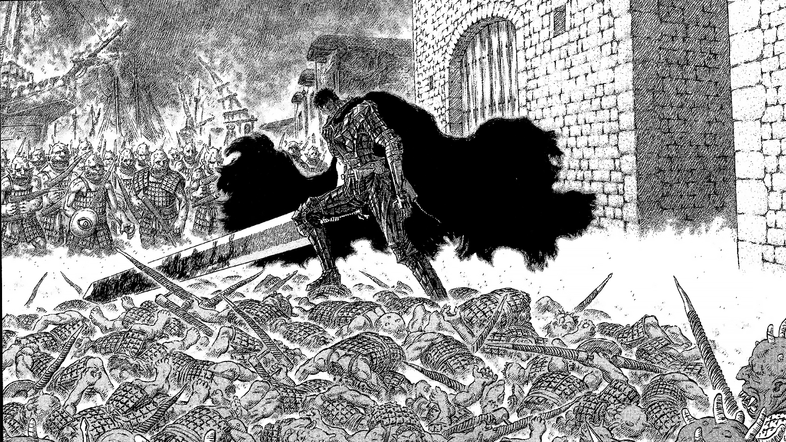
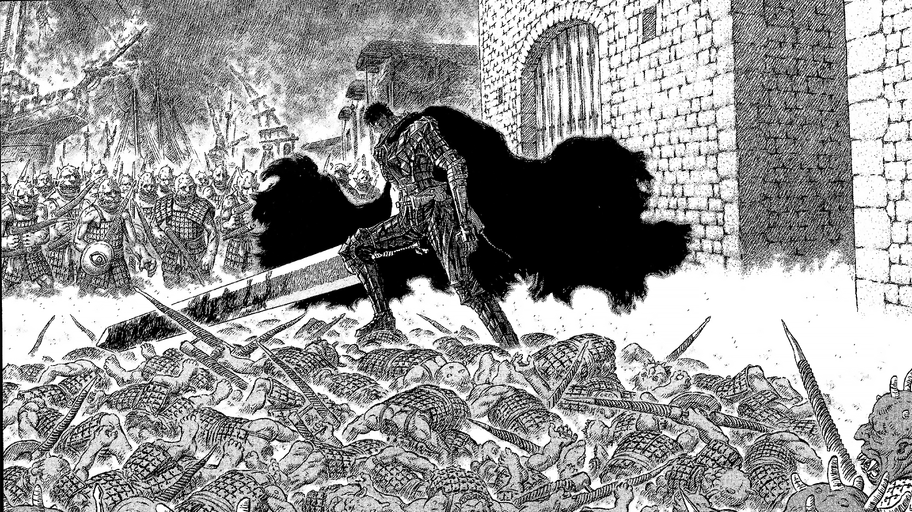

My name is Andrej Arsovski. I was born on September 27th in 2004. I have a passion for software development and computer architecture. I`m currently studying at the Faculty of computer Science and Engineering in Skopje, Macedonia.
I finished primary school at "ОУ Кирил Пејчинович" and I`ve finished High School at "Раде Јовчевски Корчагин". Currently, I`m currently enrolled in Software Engineering and Information Technologies(SIIS).
 
